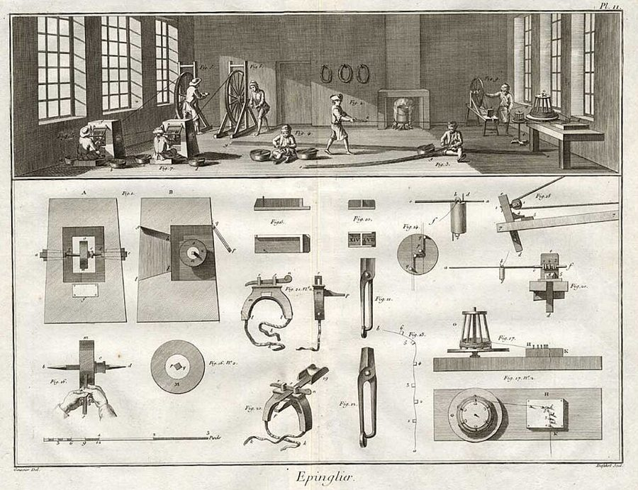

这一页在做什么
上一章说社会凝聚力要紧，这一章问：它最大的威胁从哪来？作者的回答落在让经济增长的那套机制本身。他先讲自己参与创办的软件公司怎样误打误撞做成「软件即服务」，再借一串经济学家讲企业和市场怎样分工消化创新，最后把镜头拉到美国两百年：农民、工厂工人、程序员。读的时候抓两条线：创新为什么规划不出来，以及它的代价为什么总落在一部分人身上。

狄德罗《百科全书》里的制针作坊图版，1762 年刻印。亚当·斯密 1776 年在《国富论》开篇用制针业讲分工；作者第 3 段说，他要仿照斯密，用一家软件公司讲 21 世纪经济前沿的创新。Goussier 绘，Defehrt 刻，公有领域，维基共享资源 读之前：这一页在全书的哪里
第 13 章最后一段（第 35 段）给社会凝聚力下了定义，这一章第 1 段就拿它开头。§1 的 APT 故事接着第 11 章第 11–14 段作者讲过的创业经历；§2 回头借用第 3 章第 41、44 段倒挂的知识树和培根那句「受审的法庭」、第 6 章奈特的风险和不确定性、第 10 章第 20 段的玻璃行业。章末第 71 段列出三条办法，第 15 章逐条展开。
第 50、69 段把被淘汰的人的出路说成「找新的生态位」「不断升级技能」。2010 年代的研究发现，受进口冲击的美国地方十年以上没缓过来，这条出路比字面上难走得多，代价也集中在特定的人和地方。细节见「对照今天」。
创新让整个社会变富，也让一部分人丢了饭碗。市场经济凭什么还能得到这些人的同意？
读的时候带着这几个问题。不用先找答案，读完回来对照「检查一下理解」。
作者说 APT 改做网上租用是「高度偶然」的。哪几样东西凑在一起？他从自家公司推到一般时，加了什么限定？§1
贝尔实验室、施乐 PARC 都做出过大发明。作者说这类研究机构的毛病不在哪里，而在哪里？§2
「赢家需要输家生产的共享资源」，作者举了哪些共享资源？§3
作者说拒绝布莱恩是明智的。他对布莱恩的支持者是什么态度？§3
这一页的路线
开头三段先立题：凝聚力会被经济制度削弱，而经济里最难分析的正是创新那一块。§1 是作者的亲历，按时间讲 APT 怎样走到网上租用，最后两段从一家公司推到一般，是全章论证的起点。§2 换成理论，第 15–20 段先搭一个思想谱系，接着用理赔主管和大公司实验室作对照，第 37 段起转去讲风投和杠杆收购，第 40–41 段收成一句「建制要建，也要被毁」。§3 第 42 段回头，从输家那边把 APT 的故事再讲一遍，然后镜头一路拉远：卢德分子、根本张力、美国两百年的就业转移、传送带的比喻、程序员。第 46–49 段的全球 GDP 和图 7、第 51 段的士兵和对冲基金经理，是插进来的，读到会觉得跳。
镜头从近到远
APT 的故事 一家公司
演化经济学 企业和市场
根本张力 整个社会
农场、工厂 美国两百年
三条办法 交给第 15 章
作者亲历 §1 第 4–13 段
理赔主管、实验室 §2 第 15–41 段
卢德分子 §3 第 42–55 段
布莱恩、传送带 §3 第 56–70 段
分权、教育、福利 §3 第 71–72 段
中间那格是全章的轴：§1、§2 在为它铺路，
后两格是它在美国历史上的样子和作者的对策。
本站示意图。上面一行是每一段讲的东西，下面是它的例子和段落；镜头从一家公司一路拉到整个国家。 作者落在哪： 在经济前沿，创新只能靠市场里的试错，规划不出来；它注定让一部分人受损，而市场经济离不开这些人的同意。政治的任务是管理这股张力，作者给出分权和试验、人力资本、福利国家三条路。
分节地图
这一页是原书第 14 章的三节，粗体是本站给的节名，下面是原书这一节第一段开头的几个词，在 Kindle 里搜它就能跳过去（原书的小标题也在目录里）。每节标了档：「先读」不读就跟不上全书主线，「有空」好看但跳过不丢线。读完打个勾。
APT 误打误撞做成 SaaS约 1200 词 Social cohesion can be undercut by … 前三段立题，接着是作者公司的亲历。第 12–13 段从一家公司推到一般，是全章的起点；跳过这节会少这个起点。 理赔主管和晶体管约 2400 词 This tradition appears under numerous overlapping … 第 15–20 段搭谱系，第 22 段起理赔主管和实验室，第 37 段起风投和杠杆收购。跳过会少第 40–41 段「建制要建也要毁」。 卢德分子和「金十字架」约 3100 词 Consider that I told the story … 第 53–54 段是全章的轴；第 56 段起美国从农场到工厂、布莱恩；第 63 段起传送带和程序员；第 71 段三条办法。
先用中文过一遍：这一页的概念
先把这一页用到、作者默认你懂的几个概念讲一遍。讲的是概念本身，作者拿它推出什么，读原书时自己看。前面讲过的知识问题 、隐性知识 、风险和不确定性 、范式 、经验曲线 、社会凝聚力 ，点进去看。
§1 软件即服务 software as a service, SaaS 传统的企业软件是这样卖的：厂商卖使用许可证，工程师到客户自己的机房把软件装好，再由客户的 IT 部门接上公司别的系统、长年维护，这叫本地部署（on-premises）。SaaS 反过来：软件只在厂商自己的机房里跑，客户用浏览器登录，按月或按年付租金。程序员熟悉的类比：自己搭一台邮件服务器，和直接用网页邮箱。客户省了安装和养人的钱，厂商只维护一个版本、随时能更新；代价是数据放在别人那里，厂商出故障大家一起停。它的老祖宗是 1960–70 年代多个用户轮流共用一台大型机的分时（timesharing）。今天各种按账号收费的网页办公软件、客户管理软件，都是这一路。
在这一页： 第 5–11 段讲 APT 怎样走到这一步；第 42–44 段又拿它当颠覆式创新的例子，看谁因此丢了活。
§2 演化经济学（作者的用法） evolutionary economics 经济学里本来就有一个叫这个名字的流派：Richard Nelson 和 Sidney Winter 1982 年的《经济变迁的演化理论》把企业比作生物，企业的惯例像基因，市场竞争像自然选择，好的做法活下来、扩散开。作者的用法宽得多：他把新制度经济学、奥地利学派、实验经济学、行为经济学都装进来，说它们的共同点是重视两样东西，不确定性和隐性知识。这是他自己的归并（第 16 段以 I believe 起头），经济学界一般不这样分。对照着看：标准的经济模型假定人知道各种结果的概率，能算出最优，再看市场落在哪个均衡点；演化的看法是谁也不知道最优在哪，只能多试，让环境来筛，像遗传算法 。
在这一页： 第 15–17 段起这个名字；第 21、65 段说它在创新前沿比均衡分析有用，在成熟行业则相反。
§2 适应效率和配置效率 adaptive vs. allocative efficiency 经济学课本里的「效率」一般指配置效率：在现有的技术和口味下，资源有没有用在最值钱的地方，比如钢材是不是都流向了最需要它的用途。经济史学家 Douglass North 说，决定长期增长的是另一种效率：一个社会的制度能不能让人不断尝试新办法、扛得住冲击、及时改掉做错的事，他叫适应效率。两者可能打架：为眼下的情况优化到极致，一变天就全盘皆输；留一些看似浪费的余量和尝试，短期吃亏，长期更能活。程序员的类比：为当前负载调到极限、谁也不敢动的系统，和留了余量、容易改的系统。
在这一页： 第 18–20 段引 North 的诺奖演讲和他 1990 年的书；第 15 章第 2 段说全章建议都为提高美国的适应效率。
§2 例行创新和非例行创新 routine vs. nonroutine innovation 经济学文献常把发明（造出第一个灯泡）和创新（把它装进产品、改出新用途、配上让人买得起的办法）分开。作者说研究创新的学者越来越看重另一种区分：有的创新能像生产一样管理，大药厂按「研发管线」给各个方向分钱、定产出指标，事先不知道会出哪个新药，但大致能估计每年出几个，这是例行创新；有的创新事先根本不知道该往哪里投，只能靠公司外面的人去试。作者把它们看成一条光谱的两端，差别在「能在多高的层次上用理性去管」。下图是本站把他的几个例子摆在这条光谱上。
越往右越难事先规划
已经自动化 的工作
理赔员 省时 10%
实验室 按方向立项
威胁母公司 的发明
替代整个 行业的点子
部门、公司里面消化
公司勉强能管
多半要到市场上「上诉」
例子都是书里第 23–33 段的；怎么摆、怎么分三段是本站的画法。
本站示意图。上面是作者说的那条光谱，下面是谁能消化这一档的创新。 在这一页： 第 22–34 段用它解释大公司为什么容不下颠覆自己的点子；第 63 段的「传送带」是同一条光谱在整个经济上的样子。
§3 创造性破坏和颠覆式创新 creative destruction, disruptive innovation 创造性破坏是熊彼特 1942 年在《资本主义、社会主义与民主》里的说法：资本主义的动力是新产品、新方法、新组织不断冒出来，同时把旧企业、旧工作、旧手艺淘汰掉；破坏不是增长的副作用，而是增长本身的一部分。汽车来了，马车夫和马掌铁匠就得另谋生路。颠覆式创新是哈佛商学院的 Clayton Christensen 1990 年代提出的，指在位的大公司特别难接招的一类创新：新东西起初便宜、简陋、利润薄，大公司要跟进，就得砍掉自己正赚大钱的老生意，于是眼看着新来者一步步吃掉市场。作者第 42 段用的是后一个词的这层意思。
在这一页： 第 42–43 段说 SaaS 是颠覆式创新，并引熊彼特；第 44 段起强调被破坏的是真人。
书里的人、研究和背景
按在书里出现的顺序排，标题前是节号。只讲到读懂这一页需要的程度。
§1 Baumol 和斯密的别针工厂第 2 段引 Baumol 的话，说企业家天生躲着理论家：做第二次的事就不叫创新了。第 3 段的别针工厂是亚当·斯密《国富论》（1776）开篇的例子：一个人从头做到尾，一天做不了几根别针；把活拆成十几道工序分给不同的人，产量翻几百倍。斯密拿它讲分工，作者借这个写法，用一家软件公司讲创新。
William Baumol 1922–2017 美国经济学家，在普林斯顿和纽约大学任教，研究企业家精神和市场怎样源源不断产出创新，著有《自由市场的创新机器》（2002）。第 2、22–23 段作者借他的研究讲大公司把创新「例行化」。
§1 APT 和 SaaS 的来历APT（Applied Predictive Technologies）是作者和两位咨询界的同事 1999 年创办的公司，帮零售商、银行等大公司设计和分析门店、客户层面的试验，第 11 章讲过它怎样从「找规律」转向做试验。这一章讲的是它怎样改成网上租用，全是作者自己的回忆，书外没有别的来源可以对照。2015 年万事达卡以约 6 亿美元买下了 APT，当时的公告称它为「云端分析服务商」。作者第 6 段说 1990 年代有一批资金充足的创业公司试过类似模式，多数失败；第 11 段的增速数字出自行业分析机构 IDC 2010 年的预测报告（书后注释）。
§2 作者点名的六位经济学家第 15 段的名单：Frank Knight（1885–1972，第 6 章讲过他区分风险和不确定性）、Joseph Schumpeter、F. A. Hayek（1899–1992，导言讲过他的知识问题）、Vernon Smith（1927 年生，实验经济学）、Ronald Coase（1910–2013，第 35 段引他 1937 年的《企业的性质》：企业内部靠命令而不是价格组织生产）、Douglass North。六人中 Hayek（1974）、Coase（1991）、North（1993）、Smith（2002）得过诺贝尔经济学奖，正是作者说的「四人」。
Joseph Schumpeter 1883–1950 奥地利出生、后来在哈佛任教的经济学家。早年强调单枪匹马的企业家，晚年认为创新会被大公司的研究部门例行化；「创造性破坏」是他的说法。作者第 37–39 段说他晚年这个判断看错了。
Douglass North 1920–2015 美国经济史学家，研究制度怎样决定一个社会的长期经济表现，1993 年和 Robert Fogel 分享诺贝尔经济学奖。第 18–20 段作者引他的诺奖演讲和 1990 年的书讲适应效率。
§2 贝尔实验室、施乐 PARC 和 IBM
施乐 PARC 1973 年做出的 Alto 电脑，陈列在美国计算机历史博物馆。竖着的屏幕，右边是鼠标，左边是五个键的小键盘。The wub，CC BY-SA 4.0，维基共享资源
第 25 段列的成果：AT&T 的贝尔实验室做出了晶体管（1947）和 C 语言（1970 年代初）；施乐的 PARC 在 1970 年代做出了图形界面、以太网和激光打印机；IBM 做出了 DRAM 内存和关系数据库的理论。书里把激光也算在贝尔实验室名下，这一项有争议：原理是贝尔实验室的 Schawlow 和 Townes 1958 年提出的，第一台能工作的激光器是 1960 年 Hughes 实验室的 Maiman 做的。作者研究生毕业后的第一份工作就在 AT&T 的研究所（第 23 段）。
§2 风险投资和杠杆收购风险投资是拿钱换刚起步、风险很高的公司的股份，赌少数几家做大。第 37 段说 2008 年约一成美国 GDP 出自风投支持过的公司，出处是美国风险投资协会 2009 年的报告；而当时报道里的那份报告，说的是这些公司营收约合 GDP 的 21%、就业约占私营部门的 11%，和「一成」对不上。杠杆收购是借大笔债务买下一家上市公司，把分散在成千上万股东手里的控制权集中起来，再逼管理层砍成本、卖业务；1980 年代是它的高峰。作者第 38 段说它让成熟行业变得更可持续，这是他的评价，美国也有不少研究者批评它把债务和裁员压在公司和员工身上。
§3 麦迪森的数据：总量和人均是两回事第 46 段和图 7 的数据来自英国经济史学家 Angus Maddison（1926–2010），他花了几十年估算两千年来各国的经济规模。这里要分清两个量：正文说 1500–1800 年中国、印度、西方各占全球 GDP 约四分之一 ，这是总量份额，人口多的地方总量自然大；图 7 画的是人均 GDP 是世界平均的几倍 。图上一千多年里各条线都贴着 1 倍附近，工业革命后西欧和美国一路升到好几倍，中国、印度掉到平均以下。图里「美国」那条线从公元元年画起，指的是今天美国这片土地。作者第 49 段自己说，这张图证明不了资本主义带来了繁荣。
§3 卢德分子
《卢德分子的首领》，1812 年 5 月在伦敦出版的讽刺版画。卢德分子假托一位叫 Ned Ludd 的首领发信、行动，这个人多半并不存在。作者不详，公有领域，维基共享资源
1811–1816 年英格兰中部和北部的纺织工人夜里结队砸毁机器，自称追随「卢德将军」。书里说他们是棉纺织工；通常的说法是参与的主要有三拨人：诺丁汉郡织袜子的针织工、约克郡给呢绒剪毛的剪绒工、兰开夏郡的棉布织工。政府派兵镇压，1812 年 2 月议会专门立法，把破坏织机定为死罪。今天英文里 Luddite 泛指抵制新技术的人。
§3 布莱恩、民粹运动和「金十字架」
William Jennings Bryan 的照片，说明页标的日期是 1908 年。作者不详，公有领域，维基共享资源
19 世纪末，美国农产品价格一路下跌，背着债的农民怪罪铁路、银行和金本位（货币只按黄金发行，钱越来越「值钱」，债越来越重）。他们组织起来的运动叫民粹运动。William Jennings Bryan（1860–1925）主张也用白银铸币、放松银根，1896 年在民主党大会上发表「金十字架」演讲，结尾说不能把人类钉死在金十字架上。他三次获民主党提名、三次落败。晚年他在 1925 年的「猴子审判」里替禁止讲授进化论的一方出庭，1960 年的电影《风的传人》照这件事改编，把他的化身演成了小丑。
词与短语
按节排，每节前面是分节地图里的节名。标着「每个字都认识」的，是熟词生义、习语和反话，最容易读错。灰色的那几个字是原句里的位置，在 Kindle 里搜它就能找到。
§1 APT 误打误撞做成 SaaS
disenfranchised
… people feel disenfranchised and less likely …
被排斥在外的、没有发言权的
本义是被剥夺选举权，这里是心理上的：觉得这个制度不是为自己设的。
political economy
… task of modern political economy …
政治和经济交织的那片领域
不是马克思主义教科书意义上的「政治经济学」，指经济政策和政治怎样互相牵动。
pin factory
… the example of a pin factory …
别针工厂
《国富论》开篇讲分工的著名例子，见「书里的人、研究和背景」。
iterate one’s way into
… iterated its way into a focus …
一轮轮试着改，最后走到
verb one’s way into 是「一路……着进入」。作者的意思是 APT 做试验软件不是事先定的方向，是试出来的。
quaint
… It seems quaint in a world …
显得老派又天真
词典常给「古色古香」，这里是说今天回头看，当年「软件公司自己开机房」被当成远见，有点可笑。
timesharing
… decades-old idea of timesharing …
分时
1960–70 年代多个用户轮流共用一台大型机的做法。
heritage environment
… in the heritage environment of …
老一套的环境
heritage 在这里不是「文化遗产」，意思接近程序员说的 legacy：从旧时代沿袭下来的那套软件和生意做法。
on-premises
… environment of on-premises software to …
本地部署的
IT 行话，软件装在客户自己的机房里。常被误写成 on-premise。
incidental to
… This was entirely incidental to us …
对……只是顺带的、碰巧的
不是「意外事故」。作者说当初用能走网络的工具，只是因为当时的开发工具本来就这样，并没打算靠它做网上租用。
float the idea
… eventually floated the idea to us …
试探着提出一个想法
像把东西放到水面上看浮不浮得起来。
up-front revenue
… mean less up-front revenue than …
预先一次收到的钱
卖许可证是一次收一大笔；出租是细水长流，起步时现金少，这对快没钱的公司是大问题。
one’s back to the wall
… Our backs to the wall, we …
被逼到墙角、背水一战
contingent
… this decision was highly contingent …
偶然的、取决于当时情况的
名词是「分遣队」，形容词在这里是「本来可以不这样」。作者紧接着说它是偶然、需要和试验的产物。
after all
… model could work after all …
（和先前以为的相反）终究还是
不是「毕竟」。1990 年代那批公司都失败了，大家以为这条路走不通，结果还是走通了。
come up to speed
… for rapidly coming up to speed …
很快熟悉情况、跟上节奏
prop up
… we must not prop up failed …
撑着不让倒
常说政府出钱救本该倒闭的企业。作者主张失败的试验要让它倒。
heterodox
… loose tradition of heterodox economics …
非正统的
作者下一段马上说这些人其实属于主流，只是强调的东西和主流不同。别读成「被排斥的异端」。
§2 理赔主管和晶体管
foreclose
… society to foreclose options for behavior …
堵死、排除
金融里是「取消抵押品赎回权」，这里是本义：把路提前关掉。
assume away
… markets, we can assume away …
（建模时）假定它不存在
经济学家的口头禅：把麻烦的因素一条假设抹掉。作者说成熟市场里能这样做，创新前沿不能。
pipeline
… manage an explicit pipeline of therapeutic …
（研发）管线
药厂行话：从实验室到上市各个阶段排着队的候选药。
shades of gray
… as just two shades of gray …
深浅不同的灰
意思是两者不是黑白两分，只是程度不同。
automate out of existence
… simply automate them out of existence …
自动化到这个工作不复存在
latitude
… have more latitude than, say …
自由发挥的余地
熟词生义：不是「纬度」。
vicariously adaptive
… that are vicariously adaptive for the …
间接地对（整个公司）有利的
vicariously 是「替别人、间接地」：部门里的做法本身不求生存，但它让公司更能活。
appeals court of last resort
… case, the market represents the …
终审上诉法院
在公司里被驳回的点子，还能拿到市场上再审一次。
it is no accident
… It is no accident …
这绝不是偶然
作者括号里自己点明：这是老派马克思主义者的口头禅，用来暗示背后有结构性原因。他借来用，是开玩笑的口气。
upset the applecart
… role is to upset the applecart …
打翻苹果车：搅乱现成的安排
contra
… Contra Schumpeter’s late career view …
（拉丁文）与……相反
if anything
… external entrepreneurship if anything has grown …
要说有什么变化，倒是反而
插入语，用来把对方的判断反过来：熊彼特以为外部创业会衰落，作者说它不但没衰落，反倒更要紧了。
within living memory
… individual entrepreneurs within living memory …
在今天还有人记得的年代
意思是并不遥远，惠普、IBM 这些巨头的创始人离我们并不远。
market for corporate control
… a true market for corporate control …
公司控制权市场
金融行话：管不好公司的管理层会被收购者整个换掉，控制权本身可以买卖。
of legend
… the so-called entrepreneur of legend …
传说中的
不是「传奇的、了不起的」，是说那种单枪匹马的企业家形象，在当时被当成过去的神话。
stage a counterrevolution
… the market has staged a counterrevolution …
发动了一场反革命
比喻：大公司体制曾像一场革命取代了小企业，市场又把它推翻回去。不带政治贬义。
§3 卢德分子和「金十字架」
self-cannibalizing
… would require self-cannibalizing existing business …
自相蚕食
商业行话：新产品抢的是自家老产品的生意。
co-opt
… incumbents can easily co-opt …
收编、拿来为己所用
tooth and nail
… fought this development tooth and nail …
拼死地、全力以赴地
harvest cash
… could have harvested cash from …
收割现金
商业行话：不再投资，只从一门慢生意里榨利润。
ditch-digger and steam shovel
… become like manual ditch-diggers competing …
拿铁锹挖沟的人对上蒸汽挖掘机
作者的比喻：安装软件的顾问被 SaaS 取代，就像人力挖沟被机器取代。
eat jobs
… process eats jobs. But it …
吞掉工作岗位
紧前面一句屏幕上是 automate.This（少个空格）。
cold comfort
… that is cold comfort to the …
没多大安慰
「饼做大了」对眼前丢了饭碗的人来说，等于没说。
make quota
… who suddenly can’t make quota …
完成销售指标
objectively myopic
… but it is objectively myopic …
客观上是短视的
作者先承认这种心态对当领导也许有用，再说它看不到自己脚下的东西。
Starlight scope
… night looking through Starlight scopes …
微光夜视瞄准镜
美军一种夜视瞄准镜的叫法。
lines on a map
… nothing more than lines on a …
地图上的几条线
意思是不把国家当成自己属于的共同体。这一整句是反问，矛头对的是不认同国家的富人，不是对冲基金这一行。
as long as you’re not the one
… as long as you’re not the …
只要挨饿的不是你
前半句 easy to mock 是先说「笑话他们很容易」，后半句把话翻过来：替卢德分子说话。
en masse
… rarely assault property en masse …
（法语）成群地
bloodless
… can sound abstract and bloodless, but …
冷冰冰、没有人情味的
不是「不流血的」。作者说根本张力听着抽象，落到现实里却是活生生的人。
in real terms
… more plentiful in real terms than …
按实际购买力算
经济学说法：扣掉了物价上涨的影响。
all but
… and all but inevitably would seek …
几乎
不是「除了……都」。all but inevitably 是「几乎不可避免地」。
stand athwart history shouting Stop
… attempting to stand athwart economic history …
挡在历史面前大喊「停下」
典故：美国保守派杂志《国家评论》1955 年的创刊词说，杂志要挡在历史前面大喊停下。作者是保守派刊物的作者，把保守派的这句名言安到民粹派的布莱恩头上，带点反讽。
sentimentally painful
… Though sentimentally painful, rejecting Bryan …
在感情上难受
作者的立场很明确，但先承认了这份难受。
media hysteria
… Contrary to much current media hysteria …
媒体的大惊小怪
作者对 2011 年前后「美国制造业完了」这类舆论的判断。
booking conference rooms
… adversary by booking conference rooms …
（靠）订会议室
挖苦服务业白领的工作：真打起仗来，开会救不了国。
archaeological dig
… through layers of an archaeological dig …
考古发掘现场
比喻：从创业公司一路看到农业，像往下挖一层层地层。
ossify
… growth sectors gradually ossify into …
逐渐僵化成
all bets are off
… though, all bets are off because …
什么都说不准了
赌场说法：所有押注作废。
scratch out
… started to scratch out little garden …
艰难地刨出（一小块地）
这一整句是作者的玩笑，不是史实。
old guard
… the skills the old guard mastered …
老一辈、守旧派
for all its faults
… America, for all of its faults …
尽管有种种毛病
for all 是「尽管」，不是「为了所有」。
值得停下来的句子
at the creative frontier of the economy, and at the moment of innovation, insight is inseparable from action.— §1 第 12 段。本站译：在经济的创造性前沿、在创新发生的那一刻，洞见和行动分不开。
这句话是作者从 APT 的经历里提炼的，也是全章的起点。关键是 inseparable：不是先想清楚再动手，而是动手了才想清楚，所以会议室里的推演和远处分析师的报告都帮不上忙。注意前面的限定：at the creative frontier。同一段他说外部分析对相对静止的商业环境有用，别读成「分析没用」。
winners in this scenario require shared resources produced by the losers. That is, the market economy requires broad social consent.— §3 第 54 段。本站译：在这个局面里，赢家需要输家生产出来的共享资源。也就是说，市场经济需要社会广泛的同意。
这是全章的轴，口气是下判断。consent 是关键词：作者不说市场需要输家「被补偿」，而说需要他们「同意」，这把一个经济问题变成了政治问题，也接回第 13 章的社会凝聚力。容易误读的地方：这句话不是在替再分配辩护，作者在第 71 段只说福利国家「看来」是现实的必需，同时说它可能侵蚀试错。
读完：作者到底说了什么
读完这一页的几节再看。下面是作者在这几节里的论点，由本站按论点重新组织，不按原书的顺序；每条下面是依据所在的段落，拿不准就回书里那几段再读一遍。
在经济前沿，创新多半是试出来的，规划不出来 作者拿自己的公司作例：改成网上租用，是客户没人安装、公司快没钱、在头几个客户身上试出来的，他说这个决定是偶然、需要和试验的产物。他说 APT 最值钱的创新无一例外来自和客户反复合作；推到一般时，他说创新「看来」建立在市场中介的试错上，在他的经验里很多创新就是这样发生的。
§1 第 4、8–9、12–13 段 大公司管得住例行创新，管不住威胁自己饭碗的那一种 大公司的实验室能按方向立项、按指标产出，也做得出晶体管和图形界面；毛病在后头，用这些发明会威胁母公司的商业模式时，公司里通常没人放行。这类创新只能到市场上「上诉」：员工出去创业，或外人抢先。能消化一切创新的公司得和整个经济一样大，那就成了计划经济。
§2 第 23–26、32–36 段 创新既需要建制，也需要建制被摧毁 公司、行会、职业资格乃至整个行业，都是在不确定中管理创新要建的东西，人得对它们投入；可它们迟早要被毁掉，时机还说不准。作者说要人一边投入一边同意被毁，很违反天性；但放弃增长，最终就是把命运交给比我们富的社会。能做的只是把这股张力管得更好。
§2 第 40–41 段，§3 第 70 段 市场经济需要输家的同意，这是民主资本主义的根本张力 创新的痛集中、看得见，好处分散、常常看不见，人们自然会组织起来阻挡它；今天的西方很少砸机器，而是走政治程序。赢家离不开大家共同维持的东西：政府资助的互联网和大学科研、法院、道路、军队。作者认为企业家「全靠自己」的想法客观上是短视的。
§3 第 50–54 段 挡住转移不明智，但痛是真的，美国有三条办法 作者说拒绝布莱恩是明智的，冻结家庭农场或用工多的工厂，美国的国防多半更弱；但他承认寻求安稳情有可原。长期哪个行业兴起很难预测，个人只能不断升级技能。社会层面三条：分权和试验、比自动化跑得快地提升人力资本、福利国家，后者他说「看来」是现实的必需。
§3 第 57、60、62、66、69、71 段
合起来： 第三部的政治主张在这里落了底：创新只能靠试错，代价又注定落在一部分人身上，政治的任务就不是挡住创新，而是让输家仍然愿意留在这个制度里。第 15 章的三组建议，是作者给这个问题的答案。
对照今天
这本书 2012 年出版。下面挑出这一页里能被后来的研究检验的说法，分「书里 / 当时 / 今天」三栏，并给一个结论。结论判的是标题里「书里的说法：」后面那一句。全书的这一节汇总在对照今天 。
成立 后来的研究支持这句话。部分成立 大方向对，细节或适用范围要改。被改写 后来的研究推翻了它，或者换了一种说法。有争议 学界至今没有定论，两边各有代表性的研究。书里的说法：SaaS 正从传统软件手里大规模夺走市场
书里 作者说 SaaS 正在大规模夺走传统软件的份额，并引行业分析师的估计：它的增速是传统软件的 6 倍，新上市的软件公司 85% 以它为模式（§1 第 11 段，出自 IDC 2010 年的预测报告）。
当时 2010 年前后，企业软件的主力还是卖许可证、装进客户机房；IDC 那份报告的副标题是「软件再也不会一样了」，说的还是趋势。
今天 趋势成真了。Gartner 2024 年 11 月预测，2025 年全球 SaaS 支出约 2990 亿美元，比上年增长约 19%；它同期预测全部软件支出约 1.23 万亿美元。两组数口径不完全一样，只看量级：SaaS 已是企业软件里很大的一块，但本地部署并没有消失。作者自己的 APT 2015 年被万事达卡收购时，也以「云端分析」为卖点。核对于 2026-10。依据：Gartner 2024-11-19、2024-10-23 新闻稿；万事达卡 2015-04-27 公告。
书里的说法：美国目前的制造业总产出和中国差不多，中国几乎肯定会在不久后超过美国
书里 和媒体的大惊小怪相反，美国仍是制造业大国，总产出目前和中国差不多、远超日本，中国几乎肯定会在不久后超过它（§3 第 61 段，依据经合组织 2010 年的报告）。
当时 按联合国的数据，交叉其实在 2010 年已经发生：那一年中国制造业增加值约 1.92 万亿美元，美国约 1.86 万亿，分别占全球约 18.9% 和 18.1%。作者写书时，两国确实「差不多」，只是中国已经略微领先。
今天 差距大幅拉开：2023 年中国约占全球制造业增加值的 28–29%，美国约 17%，仍排第二。「美国仍是制造业大国」站得住；「不久后超过」那一半，在他下笔前就已经是事实了。核对于 2026-10。依据：美国国际贸易委员会 2024 年简报；CSIS China Power 项目（引联合国统计司数据）。
书里的说法：今天西方的受损者不砸机器，而是结成政治联盟，用政治程序放慢颠覆性的变化
书里 受损者在当代西方很少大规模破坏财产，而是结成政治联盟通过法律限制「织机」；被淘汰的人要找新的生态位，否则就丢收入（§3 第 50 段、第 53 段）。
当时 经济学界的通行看法是，贸易和技术总体有益，受损的人会换行业、换地方，调整不算太难。
今天 Autor、Dorn 和 Hanson 2016 年的综述发现，中国进口冲击之后，美国受冲击最重的地方工资和劳动参与率至少压低十年，别的行业的就业没有补上。他们和 Majlesi 2020 年在《美国经济评论》上又发现，这些地方的选民在 2000–2016 年间转向两党更极端的候选人。政治反弹确实来了，走的正是选票和政治程序；但它冲着的主要是贸易，不是技术本身。核对于 2026-10。依据：Annual Review of Economics 2016, 8:205–240；AER 2020, 110(10):3139–83。
本站怎么看
读完作者的论点，再看它站不站得住。每一块摆出三样：主流怎么看，作者怎么看，本站的评论。最后一句是本站对这一页的总体判断。
一家公司的故事，能证明「创新靠试错」吗
主流看法： 创业研究里，成功者事后讲的故事要打折扣是常识：失败的公司没人写书，同样的打法在它们身上也许没灵。另一方面，「先做最小的版本、边试边改」在 2011 年后成了创业界的通行做法；Camuffo 等人 2020 年在 Management Science 上发表的一项随机试验，让 116 家意大利初创公司分组受训，被教会「提出假设、做测试」的那组表现更好，也更常转向别的点子。
作者的看法： APT 最值钱的创新无一例外来自和客户反复合作；推到一般时，他说创新「看来」建立在市场中介的试错上，也承认多数这样的创新者会失败（第 4、12–13 段）。
本站的评论： 故事生动，限定词也都在，但它是创始人的回顾，样本只有一个，而且是活下来的那个；作者还是靠卖试验软件为生的人。把它当一个好例子，不当证明。有意思的是，后来的研究支持的是「有章法的试验」，这和作者全书的主张反倒更合拍。
主流经济学真的对付不了创新吗
主流看法： 2012 年时主流里已有内生增长理论（Romer 1990 年，2018 年获诺贝尔奖）和熊彼特式增长模型（Aghion 和 Howitt 1992 年），后者正是把创造性破坏写进了数学模型。2025 年诺贝尔经济学奖颁给 Mokyr、Aghion 和 Howitt，表彰他们解释了创新驱动的增长。
作者的看法： 他点名的这些人属于主流，但他们对不确定、试验和演化的强调，和经济系里占主导的「风险、量化、均衡」不同；均衡分析对成熟行业有用，对 SaaS 这样的创新几乎没用（第 15–16、21、65 段）。
本站的评论： 作者没有说主流排斥这些人，这一点他讲得公道。但「演化经济学」是他自己的归并；把经济系的主导范式概括成「风险、量化、均衡」，也简化了当时的经济学。2025 年的诺奖说明，创造性破坏可以建模。不过他另一层意思站得住：模型能讲清机制，预测不了下一个兴起的行业（第 66 段），主流也不否认这一点。
对输家，「不断升级技能」够不够
主流看法： 经济学家大多同意，长期看从农业到制造业再到服务业的转移让生活水平大幅提高；但中国冲击的研究显示，代价集中在特定的人和地方，许多人没有转去别的行业。左翼批评者认为，把出路落在个人「升级技能」上，是把结构问题推给了个人。
作者的看法： 拒绝布莱恩是明智的，但寻求安稳情有可原；程序员只要技能升级得够快就能过得好；社会层面要靠分权、人力资本和福利国家，后者「看来」是现实的必需（第 57、60、69、71 段）。
本站的评论： 作者同情输家，也承认要福利国家，比他批评的「全靠自己」的企业家公道。弱处在个人层面的药方太轻巧：被淘汰的人往往年纪大、离不开家乡，「升级」不是想升就能升。他的程序员例子今天碰上能写代码的大模型，更值得读者自己掂量。
本站的总体看法： 这一章的框架有用：创新靠试错、它的代价集中、市场需要输家同意，这三点今天大多站得住，「根本张力」后来在民粹政治里看得更清楚。打折扣的是证据：主要靠一家公司的回忆和作者对历史的解读，他自己第 49 段也承认，这类大判断测不出因果。
检查一下理解
先在心里答，再点开。答错的那题，回书里把对应那一节再读一遍。
1.（§1）APT 为什么改成让客户在网上租用软件？作者怎么评价这个决定？ 一个早期客户没有 IT 人手来安装样品，只好先让它上网用；它的 IT 部门又一直排不上队，客户就提出付「租金」。这时 APT 正快没钱，只好在头几个客户身上试这种做法。作者说这个决定高度偶然，是偶然、需要和试验的产物。
2.（§1）作者从 APT 推到「创新靠市场里的试错」时，用了哪些限定？ 他说的是「在我的经验里」很多创新这样发生、创新「看来」建立在试错上；「无一例外」只用在 APT 自己最值钱的那些创新上。他也承认多数这样的创新者会失败。
3.（§2）理赔主管想出三种改进，各会有什么下场？ 每单省时 10%，会被奖励；把理赔全自动化、消掉上司的岗位，上司多半不肯；想出取代保险本身的办法，公司里几乎没人会放行，除非碰上很有远见的 CEO。于是她只能出去创业，或者等外人来做。
4.（§2）为什么不能办一家足够大的公司，把所有创新都消化掉？ 创新出人意料，能消化一切创新的公司得和整个经济一样大。按科斯的看法，企业内部靠命令组织生产，这样的公司就等于一整个计划经济。
5.（§3）第 46 段说 1500–1800 年中国、印度、西方各占全球 GDP 约四分之一，图 7 却显示后来西方高出好几倍。两者矛盾吗？ 不矛盾，量的不是一个东西。四分之一是总量份额，人口多，总量就大；图 7 是人均 GDP 是世界平均的几倍。而且作者第 49 段说，这张图证明不了资本主义带来了繁荣。
6.（§3）作者说市场经济需要输家的同意。为什么输家的同意成了问题？ 创新的痛集中、看得见，好处分散、看不见，受损的人会组织起来用政治程序阻挡它；而赢家又离不开大家一起维持的东西，比如互联网、法院、道路和军队，输家也是维持它们的人。
7.（§3）第 71 段的三条办法是什么？哪一条作者说可能侵蚀试错？ 分权和试验、比自动化跑得快地提升人力资本、用福利国家把价值从赢家转给输家。第三条他说可能侵蚀试错，但「看来」是现实中发达民主国家的必需。第 15 章逐条展开。
想一想：你现在每天做的工作里，有哪些十年前要靠人一点点手工做？反过来，你今天最值钱的本事，哪一部分最可能在十年内被「例行化、自动化」？到那时，你希望身边的制度为你做什么，又愿意为别人付出什么？
精彩回顾
读过又忘了，从这里想起来。挑的是这一页最值得记住的故事、人和说法，不按原书顺序；每条后面是节号，想细看就回书里那一节。全书各页的这一节都收在全书回顾 。
一句话： 让经济增长的创新只能靠试错、注定有人受损；市场经济离不开输家的同意，政治要做的是管好这股张力。
没人来装，只好租 APT 的一个早期客户没有 IT 人手安装软件，公司又快没钱，只好让客户上网用、收租金。作者说，SaaS 就这样被逼了出来。
§1 理赔主管的三种点子 省时 10% 会被奖励；把上司的活自动化掉就难了；想出取代保险本身的办法，公司里没人放行，只能到市场上「上诉」。
§2 施乐的另一半故事 人人记得乔布斯拿走了 PARC 的图形界面和鼠标。作者补了一句：施乐也把 PARC 的激光打印机做成了几十亿美元的生意。
§2 只要挨饿的不是你 砸织机的卢德分子很好笑，作者说，前提是挨饿的不是你。今天的受损者不砸机器，而是走政治程序去放慢变化。
§3 烧了城市，留下农场 布莱恩三次获提名、三次落败。作者说拒绝他是明智的，但他代表了那个时代相当一部分美国人。
§3 发现、例行化、自动化 作者在 APT 常挂在嘴边的口号，被他推到整个经济：行业从创业起步，最后被压成用人少的自动化部门。程序员也在这条传送带上。
§3